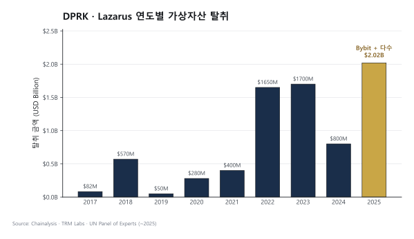

TL;DR
- Lazarus Group = 북한 정부 후원 사이버 부대 (Bureau 121, RGB 산하)
- 2025년 단일 해 $2.02B 탈취 (전년 대비 +51%), 누적 $6.75B
- 2025-02-21 Bybit hack ≈$1.46B (ETH + stETH + mETH + cmETH 혼합) — 단일 사건 사상 최대
- 자금세탁 핵심: 48시간 내 mixer + cross-chain bridge + CMLN(중국어 자금세탁 네트워크) 활용
- FBI 명칭: TraderTraitor (Lazarus의 한 sub-cluster)
- 2025년 service compromises의 76%가 DPRK
- 핵·미사일 프로그램 자금조달원으로 의심
1. Lazarus Group이란 — 단순 해커가 아니라 국가 기관
정체성
Lazarus Group은 북한 정찰총국(RGB) 산하의 국가 소속 사이버 부대입니다. 민간 해커 그룹이 아니라 조선인민군 Bureau 121 같은 공식 군사 단위에 속하며, 2009년경부터 활동 중. 미국 OFAC은 2019년에 Lazarus를 SDN List에 제재 지정했습니다.
용어: - APT (Advanced Persistent Threat) — 특정 표적을 장기간 집요하게 공격하는 조직. 국가급이 대부분. - RGB (Reconnaissance General Bureau) — 북한 정찰총국. 해외 정보·사이버·암살 작전 총괄. - Bureau 121 — RGB 산하 사이버전 부대. Lazarus의 조직적 근거지로 추정.
왜 "단순 해킹"이 아닌가
민간 해커 그룹은 보통 개인 수익을 목적으로 하지만, Lazarus는 국가 외화 조달이 목적. UN Panel of Experts 보고서에 따르면 Lazarus가 탈취한 자금은 핵·미사일 프로그램 자금으로 흘러가는 것으로 추정됩니다. 이 때문에:
- 탈취량이 수억 달러 단위 (민간 해커 수준 넘음)
- 자금세탁 인프라가 국가급 정교함
- FBI·UN·OFAC이 매년 집중 감시
- 한국 입장에서는 적성국가 제재 + 우리 거래소 표적의 이중 위협
활동 연혁
| 시기 | 활동 |
|---|---|
| 2009~2014 | DDoS, wiper 공격 (한국 농협 등) |
| 2014 | Sony Pictures 해킹 |
| 2016 | Bangladesh Bank SWIFT $81M (전통 금융) |
| 2017 | WannaCry 랜섬웨어 |
| 2017~ | 가상자산 거래소 해킹 본격화 |
| 2022 | Ronin Bridge $625M (Axie Infinity) |
| 2024~2025 | DeFi·Bridge·거래소 대거 공격 |
| 2025-02 | Bybit $1.46B (사상 최대) |
Sub-cluster — 같은 조직 내 여러 팀
- Lazarus — 광범위 상위 명칭
- APT38 — 금융 표적
- TraderTraitor (FBI 명명) — 가상자산 표적, 가짜 채용 수법
- Bluenoroff — 핀테크 표적
실무 포인트
Lazarus는 한 인물이나 한 팀이 아니라 여러 sub-cluster의 합입니다. 방어 시 "Lazarus 차단"을 단일 조치로 끝낼 수 없고, sub-cluster별 패턴을 별도 추적해야 합니다. KYT 벤더(Chainalysis·TRM·Elliptic)의 Lazarus 라벨 품질은 sub-cluster별 구분 정확도로 평가됩니다.
2. 2025-02-21 Bybit Hack — 사상 최대 사건
sequenceDiagram
autonumber
participant P as 🕵️ Lazarus<br/>(공급망 공격자)
participant S as 📦 Safe/Wallet<br/>Provider
participant B as 🏦 Bybit<br/>Cold Wallet Ops
participant C as ⛓️ Ethereum<br/>Blockchain
participant M as 🔀 Mixer·Bridge·<br/>CMLN OTC
P->>S: 1️⃣ 제3자 wallet UI 침투
S-->>B: 2️⃣ 변조된 signing 인터페이스 제공
B->>B: 3️⃣ "정상 거래"로 인식<br/>서명 승인
B->>C: 4️⃣ 트랜잭션 브로드캐스트<br/>≈$1.46B 이체
C->>P: 5️⃣ Lazarus 지갑 수신
Note over P,M: 🕒 48시간 내 layering 시작
P->>M: 6️⃣ peel chain · THORChain bridge<br/>DEX swap · CMLN OTC
M-->>P: 7️⃣ 스테이블코인·현금 환전
Note right of M: 2026-03 시점<br/>$400M 추적·$1.1B 미추적공격 서사
2025년 2월 21일, Bybit의 콜드월렛 운영팀이 평소처럼 정기 이체 트랜잭션을 서명했습니다. 서명자들은 UI에 표시된 트랜잭션이 정상이라고 확신했지만, 실제 블록체인에 기록된 건 Lazarus의 지갑으로 약 $1.46B 규모 자산을 전송하는 트랜잭션이었습니다.
무엇이 일어났나: 공급망 공격(Supply Chain Attack). Bybit 자체 시스템이 해킹당한 게 아니라, 서명 워크플로우에서 사용된 제3자 wallet provider(Safe 등)의 프론트엔드 인터페이스가 사전에 침투·변조됐습니다. 서명자 눈에는 정상 트랜잭션이 표시됐지만, 실제 서명된 데이터는 Lazarus의 컨트랙트를 호출하는 내용. 운영자가 "내가 본 것"과 "내가 서명한 것"이 달랐던 결정적 실패 지점.
사실 관계
- 2025-02-21: Bybit cold wallet에서 약 $1.46B 탈취 (ETH 약 40만개 + stETH·mETH·cmETH 등 LST 혼합)
- 공격 방식: 공급망 공격 — 제3자 wallet provider 침투, signing 인터페이스 변조
- 2025-02-26 FBI가 공식 Lazarus 귀속 발표
48시간 자금세탁 서사
해킹 후 48시간 이내에 Lazarus는 약 $160M layering을 완료했습니다. 이 속도가 왜 중요한가: 전통 금융에서는 수일~수주가 걸리는 분산·환전이 가상자산에서는 48시간. 사고 후 대응은 이미 늦고, 사전 차단만이 실질적 방어라는 교훈.
2026-03 시점 추적 현황: - $400M 추적 + 부분 환전됨 - $1.1B 잔여 추적 중 (다양한 wallet cluster)
사용 도구: - Cross-chain bridge (THORChain 등) - DEX swap (Uniswap, Curve, etc.) - CMLN(중국어 자금세탁 네트워크) OTC desk
업계에 남긴 임팩트
Bybit 사건은 가상자산 업계에서 "Bybit 이전 / Bybit 이후" 로 불릴 만큼 보안 표준을 재정의했습니다:
- 거래소 보안 표준 재검토 — 다중 서명 흐름·서명 UI 검증 강화
- 미국 의회 청문회 개최
- US 의회 가상자산 보안 입법 가속화
- Bybit는 자체 자금으로 사용자 손실 전액 보전 (이 사실이 업계에 안도감)
실무 포인트
Bybit 사건의 핵심 교훈은 "서명자가 본 것과 서명한 것이 같은가" 를 검증하는 메커니즘이 필요하다는 것. 이게 Blind Signing 금지 운동으로 이어졌고, 주요 하드웨어 지갑(Ledger 등)이 2025년 내 트랜잭션 내용을 하드웨어에서 직접 파싱·표시하는 기능을 강화했습니다. 수탁업자나 거래소 운영팀은 이 검증 레이어를 필수 통제로 두는 게 업계 표준.
3. DPRK 가상자산 활동 통계 (2025)

탈취 금액
- 2025: $2.02B (전년 +51%)
- 누적: $6.75B (Lazarus 가상자산 탈취 시작 이후)
- 2025 전체 service compromises의 76%가 DPRK
주요 사건
| 연도 | 사건 | 금액 |
|---|---|---|
| 2017 | Yapizon (한국) | ~$5M |
| 2018 | Coinrail (한국) | $40M |
| 2018 | Coincheck (일본) | $530M (NEM) |
| 2019 | UpBit (한국) | $50M |
| 2020 | KuCoin | $280M |
| 2021 | Liquid (일본) | $97M |
| 2022 | Ronin Bridge | $625M |
| 2022 | Harmony Horizon | $100M |
| 2023 | Atomic Wallet | $100M |
| 2023 | Stake.com | $41M |
| 2024 | DMM Bitcoin (일본) | $305M |
| 2025 | Bybit | $1.46B |
| 2025 | WazirX (인도) | $230M |
실무 포인트
표에서 한국·일본 거래소가 반복 표적이 되고 있다는 패턴이 두드러집니다. 이는 우연이 아니라 언어·시간대·인력 채용 접근성이 맞물린 결과. 한국어 사용자 커뮤니티는 Lazarus가 침투하기 쉬운 환경이며, 직원 대상 사회공학(social engineering) 대응이 특히 중요합니다.
4. 자금세탁 패턴 — Lazarus Playbook
Step 1. 즉시 분산
- 탈취 직후 수십~수백 wallet으로 분산 (peel chain)
- 각 wallet으로 작은 금액씩
Step 2. Cross-chain Bridge
- ETH → BTC, ETH → BNB, ETH → Tron 등
- THORChain, Stargate, ChainFlip, Across 등 활용
- 분석 도구의 한 체인 추적 단절
Step 3. DEX Swap
- Uniswap, PancakeSwap, Curve 등에서 자산 형태 변환
- KYC 없는 환경
Step 4. Mixer
- Tornado Cash (2025-03 제재 해제 후 다시 활용)
- Wasabi, Samourai (2024 운영자 체포 전까지)
- 최근에는 새로운 mixer·CoinJoin 변형 시도
Step 5. OTC 환전
- CMLN (중국어 자금세탁 네트워크): 텔레그램·위챗 OTC
- 5~15% 수수료
- 가상자산 → 위안화·USD·현금
- 또는 USDT(Tron) 형태 유지하며 "환금 가능" 자산으로 보유
Step 6. 북한 자금화
- 중간책을 거쳐 평양 송금
- 사치품 구매 / 핵·미사일 부품 / 사이버 인프라
실무 포인트
6단계 playbook은 거의 모든 Lazarus 사건에서 반복됩니다. 즉 Step 1부터 차례로 모니터링·차단하는 게 가능. KYT 시스템이 "Lazarus cluster"를 잘 라벨링하는 건 Step 1~2 차단에는 효과적이지만 Step 3 이후(DEX·mixer·OTC)는 attribution lag이 큽니다. 그래서 사고 후 글로벌 거래소 간 24시간 내 freeze 협조 요청이 실질적 자산 회수의 핵심.
5. 새로운 패턴 — 가짜 채용·Insider 공격
Fake Recruitment / Job Scam
Lazarus의 TraderTraitor sub-cluster는 LinkedIn·구직 사이트에서 가짜 헤드헌터 행세를 하며 가상자산·AI 회사 직원을 표적으로 삼습니다. 공격 흐름:
- 가짜 헤드헌터가 높은 연봉의 매력적인 포지션 제안
- 가짜 코딩 테스트 제공 (GitHub 저장소, 인터뷰 준비 PDF 등)
- 파일 실행 시 멀웨어 설치
- 직원 노트북 침투 → 회사 내부 인프라 접근
- 신원 도용·키 탈취·코드 주입 등 2차 공격
Insider Threat
북한 IT 노동자가 가명·위조 신분증으로 가상자산 회사에 원격 채용되는 사례가 2024년부터 급증. 보수를 가상자산으로 받아 북한에 송금. 미국 DOJ가 2024~2025년 다수 적발, 한국 회사도 잠재적 피해자.
Bitrefill Mirror Attack (2026-03)
Lazarus를 모방하는 동조 그룹도 등장. 보안 방어가 원본 Lazarus만 겨냥하면 놓치는 영역이 생깁니다.
실무 포인트
HR·채용 프로세스도 AML 보안의 일부라는 인식이 필요. 기술 면접 시 신원 검증(비디오 통화 + 정부 발급 ID 실시간 대조), 채용 후 북한 IP·VPN 접속 모니터링, 정기적인 직원 LinkedIn 가짜 헤드헌터 교육 이 3가지가 실무 표준이 되어가고 있습니다.
6. 방어 — 회사 차원
기술
- 다중서명 + MPC + Hardware Wallet — 단일 서명자 실패에 취약하지 않게
- 서명 UI 검증 — Bybit 사건 교훈, 서명자가 본 것과 서명한 것의 일치 보장
- 공급망 보안 — 제3자 SDK·wallet provider 검증
- Cold storage 비율 — 가상자산이용자보호법 80% 요구
KYT
- Lazarus 관련 wallet은 Chainalysis·TRM·Elliptic 라벨 즉시 반영
- 입출금 시 Lazarus exposure 자동 차단
- 의심 거래 → 즉시 STR
KYC + HR 보안
- 채용 시 북한 IT 노동자 식별 (시간대·신분증 위조·언어 단서)
- 임직원 LinkedIn 가짜 헤드헌터 경고
- 보안 교육 (피싱, 가짜 PDF)
협력
- FBI·KISA·FIU 정보 공유
- 산업 정보 공유 (ISAC)
- 사고 발생 시 24시간 내 글로벌 거래소 freeze 협조 요청
실무 포인트
거래소는 사고 발생 직후 전 세계 주요 거래소와의 핫라인이 얼마나 잘 작동하는가가 자산 회수율을 결정합니다. 회사가 평시에 어떤 그룹(Crypto ISAC, Elliptic Investigator Network 등)에 가입해 있는가, 다른 회사 CISO·AMLO와 직접 연락 가능한가가 위기 시 차이를 만듭니다.
7. 정책적 의미
- DPRK는 가상자산 자금세탁의 #1 국가행위자
- 미국 의회 + UN Panel 보고서 매년 갱신
- 한국 입장에서 특히 중요 — 적성국가 제재 + 우리 거래소 표적
- FATF Black List 유지
8. 학습 포인트
- 가상자산 보안은 단순 해킹 방어가 아니라 "공급망 + Insider + AML"의 결합
- 자금세탁이 24~48시간 내 완료되므로 사고 후 대응은 늦음 → 사전 차단이 본질
- Lazarus 라벨은 KYT 벤더의 attribution 품질의 시금석
- 한국·일본 거래소가 역사적으로 표적 다수 — 한국어 사용자 인식 필수
- 2025-02 Bybit가 보안 인식의 분기점
더 읽을거리
tornado-cash.md— Lazarus가 자주 쓴 mixermajor-enforcement.md— 관련 enforcement 사례../3-crypto-aml/onchain-typology.md— 자금세탁 패턴../5-compliance/sanctions-screening.md— OFAC SDN- The Hacker News — DPRK $2B in 2025
- TRM Labs — Bybit Hack 분석
- BlockEden — Lazarus Playbook $6.75B
- 38 North — Digital Kleptocracy → Crypto Superpower
- Chainalysis 2026 Crypto Crime Report